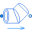

GeometryGeometric data for a curved bend |
|
Information
This information is part of the Modelica Standard Library maintained by the Modelica Association.
This record is used to define the geometric (constant) data of a curved bend. The details of the record are described here.
Used in Components (1)
|  |
Modelica.Fluid.Fittings.Bends
Curved bend flow model |